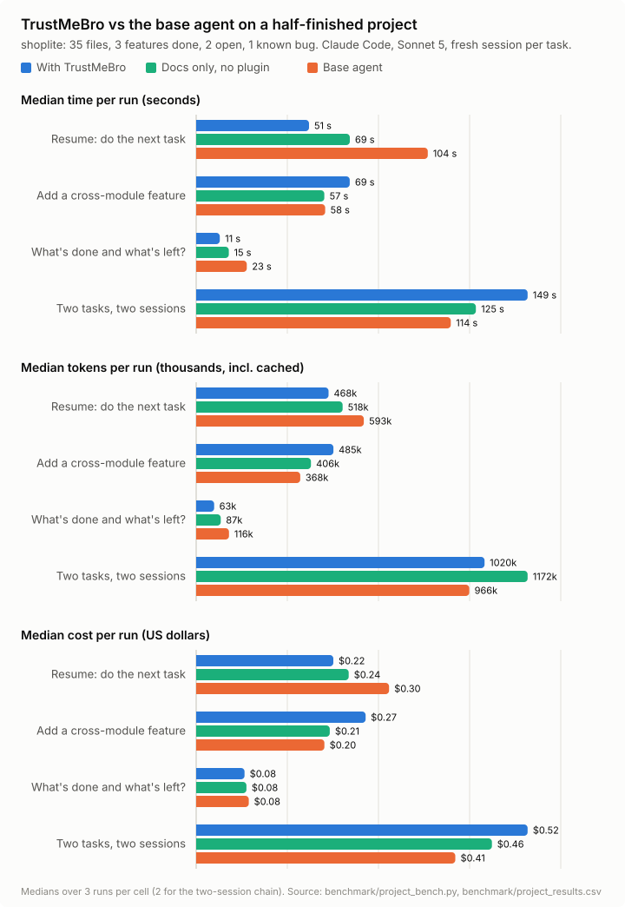

Your agent keeps the roadmap.
TrustMeBro maps your code, puts every new task on the roadmap before touching it, and keeps the records current as work lands. The next session starts from where the last one stopped.
Install in Claude Code
/plugin marketplace add TonyLikeDev/tricklord
/plugin install trustmebro@trustmebroAlso for IBM Bob, GitHub Copilot CLI, Antigravity and Codex · all installs · built for the IBM Bob 2.0 hackathon
Same prompt, one keeps the record
A new session on a half-finished project, same model and code. The prompt: Continue the project: do the next open task.
Base agent
Explores the code to work out what's done and what's next, then writes the change.
With TrustMeBro
Reads the next action from the roadmap, does it, and records it:
## Feature 4: Discount codes
- [x] `discount_codes` table in schema.sql,
seeded with SAVE10Medians of 3 runs each, Claude Code with Sonnet 5, on the benchmark project below.
How it works
- Map it
/layout-initwritesLAYOUT.md: folders, components, database, and where every piece of logic lives. - Plan it
/roadmap-plannerturns an idea or a proposal intoPLAN.mdand stops for your approval, then createsROADMAP.md. - Record firstEvery new task goes on the roadmap before the code: a feature becomes a phase, a fix a maintenance item, and big work waits for an approved plan.
- Tick with evidenceFinished items are ticked with the file, test or result that proves them, and the layout is updated in the same change.
- Resume coldThe next session starts from the progress headline and the next actions, not from rereading the code.
Benchmark
A half-finished shop backend (35 files, 16 tests: 3 features done, 2 open, 1 known bug), a fresh session per task, and three setups with identical code: the base agent, the agent with LAYOUT.md and ROADMAP.md but no plugin, and TrustMeBro.
Where it wins
- 2× faster resuming the project: 51 s vs 104 s, and 29% cheaper
- 46% fewer tokens answering "what's done, what's left?", and it named the bug the code doesn't show
- Every change run left the roadmap current; the same docs without the plugin, 0 of 5
What it costs
- +28–32% on pure implementation tasks, for keeping the roadmap and layout up to date

| Scenario | Setup | Correct | Time | Tokens | Cost | Roadmap current |
|---|---|---|---|---|---|---|
| Resume the project | Base | 3/3 | 104 s | 593k | $0.303 | n/a |
| Docs only | 3/3 | 69 s | 518k | $0.239 | 3/3 | |
| TrustMeBro | 3/3 | 51 s | 468k | $0.215 | 3/3 | |
| What's done, what's left? | Base | 2 of 3 items | 23 s | 116k | $0.083 | n/a |
| Docs only | 3 of 3 | 15 s | 87k | $0.079 | n/a | |
| TrustMeBro | 3 of 3 | 11 s | 63k | $0.076 | n/a | |
| Add a cross-module feature | Base | 3/3 | 58 s | 368k | $0.201 | n/a |
| Docs only | 3/3 | 57 s | 406k | $0.210 | 0/3 | |
| TrustMeBro | 3/3 | 69 s | 485k | $0.266 | 3/3 | |
| Two tasks, two sessions | Base | 2/2 | 114 s | 966k | $0.407 | n/a |
| Docs only | 2/2 | 125 s | 1,172k | $0.464 | 0/2 | |
| TrustMeBro | 2/2 | 149 s | 1,020k | $0.520 | 2/2 |
Claude Code 2.1.283, Sonnet 5, 2026-09-27. 3 runs per cell (2 for the two-session chain), 45 sessions, $7.81. Tokens include cached input. "Two tasks, two sessions": discount codes, then the shipping bug, each in a new session with no memory of the first. Reproduce with python3 benchmark/project_bench.py run.
Install
Skills work in every agent. The automatic parts (session-start rules, the new-task reminder that creates ROADMAP.md) run in Claude Code and Bob.
Claude Code tested
/plugin marketplace add TonyLikeDev/tricklord
/plugin install trustmebro@trustmebroIBM Bob tested
Copy the repo's .bob/ folder into your project and open it in Bob. Rules, skills and both hooks are inside.
GitHub Copilot CLI tested
copilot plugin marketplace add TonyLikeDev/tricklord
copilot plugin install trustmebro@trustmebroAntigravity CLI validated
git clone https://github.com/TonyLikeDev/tricklord.git
agy plugin install ./tricklord/srcCodex untested
codex plugin marketplace add TonyLikeDev/tricklord
codex plugin add trustmebro@trustmebroGemini CLI untested
gemini extensions install ./tricklord/srcCommands
- /layout-init
- Map an existing codebase into
LAYOUT.md. - /roadmap-planner
- Turn an idea or documents into
PLAN.md; after your approval,ROADMAP.mdand the first action. - /roadmap-sync
- Check the roadmap against the code and git history, and fix the drift.
- /dedup-merge
- Merge copy-pasted code into shared implementations, with before/after line counts.
- /orchestrator
- Look at the project's state and say which skill to run next.